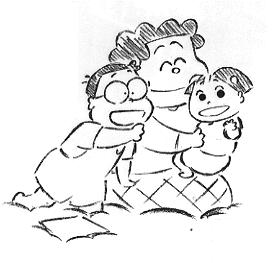

制作日誌 1999年6月
99.6.1（火）
・動画が残り10カットを切り、深夜、制作陣が会議室に集まり、初号へむけての様々な議論が交わされる。皆、かなりせっぱ詰まった状況のため、爆弾発言連発の会議となる。とりあえず、外注動画さんと、スタジオにお願いしている２カットがギリギリのスケジュールで上がってくることが報告され、それまでにどれだけ他のカットを終わらせておくかが今後の目標ということが再確認される。
99.6.2（水）
・デスク神村氏のコンピュータが突如明滅を始める。まるでカラータイマーのようだ。完成までの秒読みか、それとも…。
・メイジャーから陣中見舞いとして、カップラーメン、アーモンドチョコ、草加せんべい、チップスター、こんにゃくゼリー等が送られてくる。
・夜の9時からプロジェクター＆フィルムのラッシュチェックが行われる。
99.6.7（月）
・動画が全てあがり、ようやく朝5時帰りの悪夢から逃れたデスク神村氏は、日付が変わる前に帰宅することに奇妙な違和感すら覚えている。なかなか眠りにつけないのだ。
・劇場回りもあと二日を残すのみ。今日は吉祥寺に集合し、吉祥寺セントラル、立川シネマシティ、新宿東急、新宿ジョイシネマ、新宿ピカデリーを訪問。
・田無にある激安焼き肉屋へ出かけていった制作部の面々。戻るなり、あまりの煙臭さに周囲の大反感をかっている。
99.6.8（火）
・朝、池袋に松竹佐藤さんと待ち合わせ、池袋シネマサンシャインへ。その後現在改装中で今月12日にオープン予定の上野松竹セントラルを訪問。これで劇場訪問は、もう一人回っている荒井さんの1日を残し全て終了する。
・仕上げ、撮影部の作業が大詰めを迎えている。
・最近高畑監督は毎日午前中にラッシュチェックを行い、午後はテレセンで音響作業に立ち会う毎日を送っている。
99.6.9（水）
・劇場紹介のページを何とか早くインターネット上にアップするため、演助新人高橋氏とコメントや写真の取り込み作業を必死で行う。
・夜、中央線の人身事故、車両故障等が重なり電車がストップ。演助新人の宮地氏等が三鷹で立ち往生となる。三鷹駅は、JRが配るタクシーチケットを早くもらおうと、宮地氏曰く「こんな人は大阪万博かオイルショック以来じゃないですか」というパニック状態（ケンカまで始まっていたそうな）になっていたとか。因に宮地氏は現在23歳で万博もオイルショックも知らないはずなのだが…。
99.6.10（木）
・テレセンにて、高畑監督が矢野顕子さんと共にラフミックス試写を見る。監督、百瀬さんらは、チェックしながら難しい顔で見ていたが、初めて見る矢野さんには大受け。終始笑いっぱなしであった。
99.6.11（金）
・ラストカット15-7-1がついに仕上げアップ。後は撮影部の合成作業とリテークが残るのみ。
・10時頃にはテレセンの作業が終了する。その後ラッシュを一旦ジブリに回収し、奥井さんに見てもらった後、明日イマジカで行われる、色の最終チェックに使う為、神村氏がラッシュをもってイマジカまで車を飛ばす。
・取材で辺見えみり嬢が来社し、社内をまわりながら撮影を行っていたが、広報の野中氏がつきっきりで対応したため、社内では嫉妬の嵐。
99.6.12（土）
・朝10時からイマジカで色の最終チェックが行われるが、最終結論は出ず。
・夜ラッシュチェックが行われるが、クライマックスシーンの背景がリテークとなる。
99.6.13（日）
・朝10時からテレセンでファイナルミックスの作業が始まる。今日はロール1と2。思いの外作業が順調に進み、6時前には終了する。その後ジブリへ戻り、8時半からラッシュチェックが行われる。
99.6.14（月）
・朝10時からテレセンで3，4ロールのファイナルミックスが行われる。今日も作業は順調に進み、9時前には終了する。今までの作品のファイナルは、いつも徹夜状態に近くなるのだが、今回はやけに順調なため、ジブリに待機している制作陣は「何か落とし穴が…」と疑心暗鬼になっている。
99.6.15（火）
・同じく朝10時からテレセンで5，6ロールのファイナルミックスが行われる。今日は演出の田辺さんが高畑監督の仕事ぶりを見学に行こうと、3時頃ジブリを出発し、テレセンに向かうも、着いた2分後に作業が終了し、ほとんど何も見ることができず。それにしても、プリミックス段階で、かなり精密な作業が行われていたとはいえ、ファイナルにしては早すぎる…。
99.6.16（水）
・ファイナルミックス最終日。今日は昨日の反省を元に、朝から田辺さんを連れてテレセンへ。今日も順調に、と思ったら、ジブリからアビッド落としのベーカムを運んだりと、思いの外作業に手間取り、終了したのが、夜の11時半頃。
99.6.17（木）
・5時にイマジカでカウンター止めのラッシュを回収し、7時から最後のラッシュチェックを行う。OKが出て、高畑監督から「お疲れさま」と挨拶がある。
・演助新人高橋、宮地、奥村の協力により、劇場紹介のページをようやくアップする。感謝。
99.6.18（金）
・テレセンでSRDマスタリングが行われる。
・今日から動画スタッフが制作休暇から復帰。それにともない、今年入った新人が二スタから本スタジオに引っ越し。今まで隔離されていたため、社内のスタッフの中には、新人達の名前すら知らない人が多い。
・新人のいなくなった二スタに謎のスタッフルームが作られる。
99.6.19（土）
・テレセンから音ネガを回収し、編集の瀬山さんへ。続いて原版の残り三ロールと音ネガを組んだものをイマジカに入れる。一応社内のかかわる作業が終了する。後は0号を待つばかり。
99.6.21（月）
・仕事も取材も無いため、高畑監督は自宅静養。
・次作の取材の為、メインスタッフの何人かが某所の保育園を訪ねる。ビデオカメラを構える珍客に、興奮しきったキッズ達はスタッフを取り囲み大混乱状態。大人気は制作居村氏と演助宮地氏。新婚の居村氏は、生まれ来る我が子と子供たちを重ねたか、組んず解れつと楽しく遊んでいた。一方の宮地氏は子供たちに「仲間」と認められたようで、帰り際に「オマエもまつぼっくり組に入れよ」と誘われていた。
99.6.22（火）
・朝10時からイマジカにて0号試写が行われる。終了後、色、音等々さまざまな問題が噴出。制作担当高橋さんを中心に、各スタッフと善後策が話し合われる。
99.6.23（水）
・音関係の問題を確認するため、フィルムを回収し、新試写室にて問題のあるロールをかける。
・来年度の新人募集の要項がほぼ決定する。
99.6.24（木）
・恒例となった、初号後の打ち上げの準備がまったくなされていないことが発覚。夜制作部で、司会を誰にするかで紛糾。
99.6.25（金）
・朝から会議室にて、打ち上げ緊急対策会議が行われる。だいたいのことが決まり一同一安心。
・午後7時より、イマジカにて0号試写（前回のは－1号だったらしい）が行われる。色の問題は、何ヶ所か修正しなければならないところはあったが、ほぼ解決。音の問題は引き続き作業中。終了後大崎の中華料理屋にて食事。
99.6.26（土）
・高畑監督がテレセンで音修正の立ち会い。試行錯誤の結果なんとかクリアーできる見通しが立つ。またまた一同一安心。
・今日ジブリは、会社的に休日だったのだが、忘れて出社してくるものが何人も出る。
99.6.28（月）
・朝9時より、イマジカにおいて制作スタッフが全員集合し、初号試写が行われる。朝早くの開始だったため、早起きが大変と、門屋氏や神村氏等は、近くのホテルに宿をとったが、深夜まで酒を飲み交わし、結局自宅から来るほうが楽な状態になったとか。
99.6.29（火）
・夕方5時より吉祥寺第一ホテルにて、「ホーホケキョ となりの山田くん 打ち上げパーティ」が行われる。高畑監督、鈴木プロデューサー以下スタッフが全員集合し、遊びに来た富田靖子さんに司会をお願いして行われたじゃんけん大会や、スタッフ全紹介、斎藤ネコさん指揮によるジブリ合唱団解散コンサート（これには高畑監督から「解散しないでこれからも気晴らしにみんなで歌ったほうが良いよ」とクレームが付きましたが）等が行われる。
99.6.30（水）
・ようやく高畑監督を除くメインスタッフも制作休暇に突入。居村氏もようやく新婚生活を満喫していることだろう。一方高畑監督は、これから公開前後にかけて、取材＆全国行脚の予定がびっしり詰まっていて、休みは当分ありそうもない。
| 次のページへ |
| 日誌索引へ戻る |